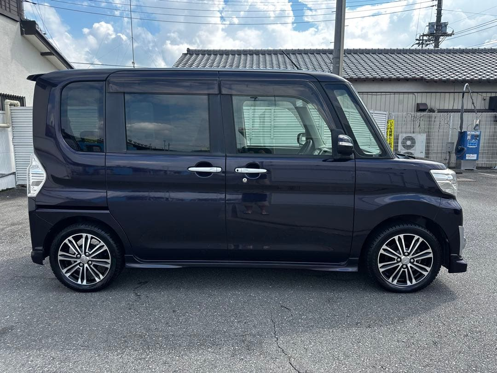

Kosai · Shizuoka · desde 2014
Carros seminovos em Kosai, com financiamento próprio
Sem visto permanente e sem fiador, com análise rápida. E a mesma loja cuida de mecânica, shaken e aluguel de carros.

4,9 ★nota no Google, 33 avaliações
2014vendendo e cuidando de carros na região
6carros nesta amostra de estoque
Estoque
Carros e preços dos anúncios reais da loja no Instagram. Na versão final, cada carro entra com as fotos tiradas no pátio e sai do site na hora que vende.
Financiamento sem visto permanente
Preencha a pré análise ao lado. A loja responde pelo WhatsApp com o resultado e as condições.
- Financiamento próprio e japonês
- Sem fiador
- Análise direto com a loja, sem burocracia de banco
A loja também faz
Mecânica geralManutenção e reparo do seu carro
Shaken e transferênciaDocumentação resolvida na loja
Pneus novos e usadosTroca e balanceamento
Aluguel de carrosPra quando o seu está na oficina
Seguro de carroCotação e contratação na loja
GuinchoSocorro quando o carro para
4,9 ★
Nota da Minami Service no Google, com 33 avaliações de clientes. Quem comprou, recomenda.
Fala com a loja
Endereço〒431-0425 Shizuoka, Kosai-shi, Umeda 37-1
Telefone / WhatsApp090-8544-8882 · Luciano
HorárioSeg a sex 9h às 19h · Sáb 9h às 18h · Dom fechado